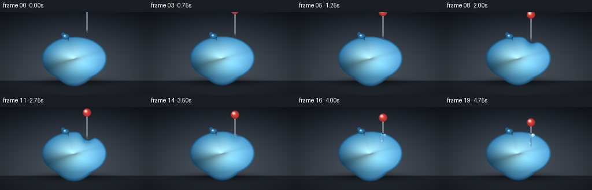
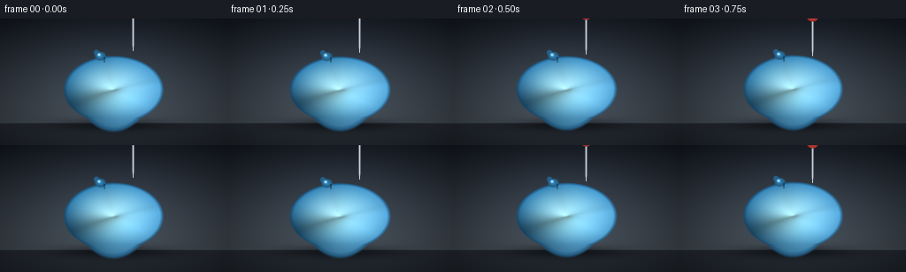

CODING AGENTS AS PIXEL WORLD MODELS
traex/Seed-2.1-Pro-0915 · phygen_024
点击播放 · 原生 RGB 像素
逐轮保存的候选
回放视频、检查图与代码变化。
每份候选均可单独播放。实际图片检查记录在下方工具轨迹中。
候选 01播放与检查图
点击播放 · 原生 RGB 像素


展开代码变化
--- 上一保存版本
+++ 本次保存版本
@@ -0,0 +1,294 @@
+"""Procedural t2v renderer: a pin slowly pressing into a water-filled balloon.
+
+Pure numpy/PIL analytic rendering (distance fields, implicit surface,
+lambertian/fresnel-style shading). Produces 20 RGB frames at 256x144, 4 fps.
+"""
+import numpy as np
+
+import artifact_io
+
+W, H, N, FPS = 256, 144, 20, 4.0
+
+YY, XX = np.mgrid[0:H, 0:W].astype(np.float32)
+
+
+def smoothstep(lo, hi, x):
+ t = np.clip((x - lo) / (hi - lo), 0.0, 1.0)
+ return t * t * (3.0 - 2.0 * t)
+
+
+def blend(dst, src, a):
+ """Alpha composite src over dst; a may be a scalar or HxW or HxWx1."""
+ a = np.asarray(a, dtype=np.float32)
+ if a.ndim == 2:
+ a = a[..., None]
+ return (dst.astype(np.float32) * (1.0 - a) + src.astype(np.float32) * a)
+
+
+# ---------------------------------------------------------------- background
+def render_background(f):
+ t = YY / (H - 1)
+ top = np.array([24, 30, 39], np.float32)
+ bot = np.array([74, 82, 90], np.float32)
+ img = top[None, None, :] * (1 - t[..., None]) + bot[None, None, :] * t[..., None]
+
+ # soft studio glow behind the balloon
+ glow = np.exp(-(((XX - 128) / 95.0) ** 2 + ((YY - 78) / 70.0) ** 2))
+ img += glow[..., None] * np.array([14, 16, 18], np.float32)
+
+ # ground / shelf
+ ground = smoothstep(117.5, 119.0, YY)
+ floor_col = np.array([38, 44, 52], np.float32)
+ img = img * (1 - ground[..., None]) + floor_col * ground[..., None]
+ horizon = np.exp(-((YY - 118.0) / 1.6) ** 2) * 0.5
+ img += horizon[..., None] * np.array([10, 12, 14], np.float32)
+
+ # gentle vignette
+ r2 = ((XX - W / 2) / (W / 2)) ** 2 + ((YY - H / 2) / (H / 2)) ** 2
+ img *= (1.0 - 0.22 * r2)[..., None]
+ return np.clip(img, 0, 255)
+
+
+# ------------------------------------------------------------------ timeline
+# tip y waypoints (pin x is fixed, vertical pin)
+TIP_WP = [(0, 36), (4, 44), (8, 50), (11, 55), (12, 54), (15, 61), (19, 72)]
+RUPTURE_FRAME = 12
+
+CX, CY, RX, RY = 128.0, 80.0, 56.0, 38.0
+PIN_X = 150.0
+
+
+def frame_params(f):
+ tip_y = float(np.interp(f, [p[0] for p in TIP_WP], [p[1] for p in TIP_WP]))
+ # relaxed upper-surface height of the ellipse at the pin axis
+ fx = (PIN_X - CX) / RX
+ y_surf = CY - RY * np.sqrt(max(0.0, 1.0 - fx * fx))
+ if f < RUPTURE_FRAME:
+ # indentation grows with how far the tip has crossed the relaxed surface
+ dent = float(np.clip((tip_y - y_surf) / 9.0, 0.0, 1.0))
+ dent *= smoothstep(3.5, 5.0, f) # no deformation before contact
+ penetrated = False
+ else:
+ dent = 1.0 * max(0.0, 1.0 - (f - RUPTURE_FRAME) / 2.5)
+ penetrated = True
+ bead = 0.0 if f < RUPTURE_FRAME + 1 else float(
+ np.clip((f - RUPTURE_FRAME - 1) / 6.0, 0.0, 1.0))
+ return tip_y, y_surf, dent, penetrated, bead
+
+
+# ------------------------------------------------------------------- balloon
+def balloon_field(f, dent, y_surf):
+ # resting water balloon: flatten the bottom against the shelf
+ yy = YY.copy()
+ flat = yy > 112.0
+ yy[flat] = 112.0 + (yy[flat] - 112.0) * 0.4
+
+ # low-frequency jiggle, volume-conserving
+ wob = 0.012 * np.sin(2 * np.pi * f * 0.18)
+ rx, ry = RX * (1 + wob), RY * (1 - wob)
+ cy = CY + 0.5 * np.sin(2 * np.pi * f * 0.18 + 0.7)
+
+ nx0 = (XX - CX) / rx
+ ny0 = (yy - cy) / ry
+ q = nx0 ** 2 + ny0 ** 2
+
+ # local crater pushed in by the pin tip (Gaussian bump on the implicit q)
+ g = np.exp(-(((yy - (y_surf + 5.0)) / 12.0) ** 2 + ((XX - PIN_X) / 9.5) ** 2))
+ q = q + 0.62 * dent * g
+ return q, rx, ry, cy, g
+
+
+def shade_balloon(img, q, cover, rx, ry, cy, dent, g):
+ inside = 1.0 - cover # 0 at edge, 1 deep inside (inverse edge factor)
+ e = np.clip(q, 0, 1)
+
+ inner = np.array([168, 223, 236], np.float32)
+ edge = np.array([44, 124, 176], np.float32)
+ col = inner[None, None, :] * (1 - e[..., None] ** 0.75) + \
+ edge[None, None, :] * (e[..., None] ** 0.75)
+
+ # fake normal from the ellipse gradient
+ nx = (XX - CX) / (rx * rx)
+ ny = (YY - cy) / (ry * ry)
+ nn = np.sqrt(nx * nx + ny * ny + 1e-6)
+ nx, ny = nx / nn, ny / nn
+ nz = np.sqrt(np.clip(1 - nx * nx - ny * ny, 0, 1))
+ lx, ly, lz = -0.45, -0.75, 0.48
+ diff = np.clip(nx * lx + ny * ly + nz * lz, 0, 1)
+ col *= (0.62 + 0.48 * diff)[..., None]
+
+ # cool rim light grazing the right/upper side
+ rim = (1 - nz) ** 2 * np.clip(nx * 0.7 + ny * 0.25 + 0.35, 0, 1)
+ col += rim[..., None] * np.array([70, 120, 150], np.float32)
+
+ # depth: darker, denser water toward the bottom
+ depth = np.clip((YY - (cy - ry)) / (2 * ry), 0, 1)
+ col *= (1 - 0.22 * depth * e)[..., None]
+
+ # soft inner caustic glow low in the balloon
+ caustic = np.exp(-(((XX - CX) / 30.0) ** 2 + ((YY - (cy + 11)) / 19.0) ** 2))
+ col += caustic[..., None] * np.array([12, 22, 20], np.float32)
+
+ # rubber outline band
+ outline = smoothstep(0.86, 0.985, e)
+ col = col * (1 - 0.55 * outline[..., None]) + \
+ np.array([18, 66, 104], np.float32) * (0.55 * outline[..., None])
+
+ # tension darkening on the slopes of the pin dent
+ col -= (dent * g * 34.0)[..., None]
+
+ # specular highlights
+ s1 = 0.95 * np.exp(-(((XX - (CX - 17)) / 11.0) ** 2 + ((YY - (cy - 17)) / 9.0) ** 2))
+ s2 = 0.5 * np.exp(-(((XX - (CX + 19)) / 5.0) ** 2 + ((YY - (cy - 7)) / 4.5) ** 2))
+ spec = np.clip(s1 + s2, 0, 1) * inside
+ col += spec[..., None] * np.array([235, 248, 252], np.float32)
+
+ return blend(img, col, cover)
+
+
+# ------------------------------------------------------------------------ pin
+def pin_masks(tip_y):
+ head_y = tip_y - 46.0
+ taper_y0 = tip_y - 8.0
+ head_r = 7.0
+ shaft_half = 1.35
+
+ # shaft (from below the head down to the taper start)
+ d_shaft = np.abs(XX - PIN_X)
+ in_y = (YY >= head_y + head_r - 1.0) & (YY <= taper_y0)
+ shaft = in_y & (d_shaft <= shaft_half + 0.6)
+ shaft_a = smoothstep(shaft_half + 0.6, shaft_half - 0.4, d_shaft) * in_y
+
+ # tapered needle point
+ ty = np.clip((tip_y - YY) / 8.0, 0.0, 1.0)
+ half_w = shaft_half * ty + 0.15
+ taper = (YY >= taper_y0) & (YY <= tip_y + 0.5)
+ taper_a = smoothstep(half_w + 0.5, half_w - 0.3, d_shaft) * taper
+
+ # plastic ball head
+ dh = np.sqrt((XX - PIN_X) ** 2 + (YY - head_y) ** 2)
+ head_a = smoothstep(head_r + 0.7, head_r - 0.5, dh)
+
+ return shaft_a, taper_a, head_a, head_y, dh, d_shaft
+
+
+def draw_pin(img, balloon_cover, tip_y, penetrated, bead, y_surf):
+ shaft_a, taper_a, head_a, head_y, dh, d_shaft = pin_masks(tip_y)
+ metal_a = np.maximum(shaft_a, taper_a)
+
+ # brushed steel shading: bright stripe offset left, dark edges
+ stripe = np.exp(-(((d_shaft - 0.15) / 0.55) ** 2))
+ metal = np.zeros((H, W, 3), np.float32)
+ metal[:] = np.array([96, 102, 112], np.float32)
+ metal += stripe[..., None] * np.array([118, 120, 126], np.float32)
+ edge_dark = smoothstep(0.9, 1.35, d_shaft)
+ metal *= (1 - 0.45 * edge_dark)[..., None]
+
+ inside_water = balloon_cover > 0.5
+ # portion of the needle inside the balloon: seen dimmed, cyan-tinted
+ refr = np.array([80, 150, 182], np.float32)
+ inner_col = metal * 0.55 + refr[None, None, :] * 0.45
+ a_in = metal_a * inside_water * 0.45
+ img = blend(img, inner_col, a_in)
+ a_out = metal_a * (~inside_water)
+ img = blend(img, metal, a_out)
+
+ # red plastic head with its own highlight
+ head = np.zeros((H, W, 3), np.float32)
+ base_red = np.array([196, 58, 52], np.float32)
+ shade = 0.7 + 0.5 * np.clip(1 - dh / 9.0, 0, 1)
+ head[:] = base_red * shade[..., None]
+ hspec = 0.85 * np.exp(-(((XX - (PIN_X - 2.2)) / 2.4) ** 2
+ + ((YY - (head_y - 2.4)) / 2.2) ** 2))
+ head += hspec[..., None] * np.array([235, 230, 235], np.float32)
+ img = blend(img, head, head_a)
+
+ if penetrated:
+ img = draw_puncture(img, y_surf, bead, tip_y, metal_a, balloon_cover)
+ return img
+
+
+def draw_puncture(img, y_surf, bead, tip_y, metal_a, balloon_cover):
+ # gathered rubber around the entry hole
+ dr = np.sqrt((XX - PIN_X) ** 2 + ((YY - y_surf) / 0.82) ** 2)
+ hole = smoothstep(2.9, 1.6, dr) * balloon_cover
+ img = blend(img, np.array([26, 58, 84], np.float32), hole * 0.85)
+ wet_ring = np.exp(-((dr - 3.1) / 1.1) ** 2) * balloon_cover
+ img += wet_ring[..., None] * np.array([40, 70, 80], np.float32) * 0.6
+
+ # short tension creases radiating from the hole
+ ang = np.arctan2(YY - y_surf, XX - PIN_X)
+ for k in range(4):
+ a = np.pi / 4 + k * np.pi / 2
+ seg = (np.abs(ang - a) < 0.16) & (dr > 2.4) & (dr < 5.2)
+ img[seg] = img[seg] * 0.82 + np.array([20, 60, 92], np.float32) * 0.18
+
+ # water beading at the hole, then a droplet sliding down the shaft
+ br = 1.2 + 1.7 * bead
+ bx, by = PIN_X + 3.6, y_surf + 3.2
+ db = np.sqrt((XX - bx) ** 2 + ((YY - by) / 1.05) ** 2)
+ ba = smoothstep(br + 0.5, br - 0.4, db) * bead
+ water = np.array([176, 226, 240], np.float32)
+ img = blend(img, water, ba * 0.8)
+ bspec = np.exp(-(((XX - (bx - br * 0.35)) / (br * 0.38)) ** 2
+ + ((YY - (by - br * 0.4)) / (br * 0.38)) ** 2)) * ba
+ img += bspec[..., None] * 220
+
+ if bead > 0.35:
+ ddy = y_surf + 9 + 8 * bead
+ dd = np.sqrt((XX - (PIN_X - 1.8)) ** 2 + ((YY - ddy) / 1.2) ** 2)
+ da = smoothstep(1.5, 0.9, dd) * balloon_cover
+ img = blend(img, water, da * 0.75)
+
+ # wet sheen on the shaft just below the entry
+ wet = (np.abs(XX - PIN_X) < 2.2) & (YY > y_surf) & (YY < y_surf + 7)
+ img[wet] = img[wet] * 0.8 + np.array([150, 205, 222], np.float32) * 0.2
+ return img
+
+
+# ----------------------------------------------------------------------- knot
+def draw_knot(img, rx, ry, cy):
+ kx = CX - 15.0
+ top = cy - ry * np.sqrt(max(0.0, 1.0 - ((kx - CX) / rx) ** 2))
+ ky = top - 1.5
+ d = np.sqrt(((XX - kx) / 6.2) ** 2 + ((YY - ky) / 5.0) ** 2)
+ a = smoothstep(1.15, 0.85, d)
+ shade = 0.75 + 0.4 * np.clip(1 - d, 0, 1)
+ knot_col = np.array([44, 116, 164], np.float32) * shade[..., None]
+ img = blend(img, knot_col, a)
+ # pinched tip pointing up-left
+ dt = np.sqrt(((XX - (kx - 4.5)) / 3.2) ** 2 + ((YY - (ky - 4.0)) / 3.4) ** 2)
+ img = blend(img, np.array([36, 98, 142], np.float32),
+ smoothstep(1.1, 0.8, dt) * 0.95)
+ # crease where the neck meets the balloon
+ crease = (np.abs(XX - (kx + 4.5)) < 1.1) & (YY > ky + 1) & (YY < ky + 7)
+ img[crease] *= 0.7
+ ks = np.exp(-(((XX - (kx - 1.6)) / 1.7) ** 2 + ((YY - (ky - 1.6)) / 1.5) ** 2)) * a
+ img += ks[..., None] * 150
+ return img
+
+
+def render_frame(f):
+ tip_y, y_surf, dent, penetrated, bead = frame_params(f)
+ img = render_background(f)
+
+ # contact shadow on the shelf
+ sh = 0.5 * np.exp(-(((XX - CX) / 62.0) ** 2 + ((YY - 120.5) / 6.5) ** 2))
+ img *= (1 - sh[..., None])
+
+ q, rx, ry, cy, g = balloon_field(f, dent, y_surf)
+ cover = 1.0 - smoothstep(1.0 - 0.045, 1.0 + 0.045, q)
+ img = shade_balloon(img, q, cover, rx, ry, cy, dent, g)
+ img = draw_knot(img, rx, ry, cy)
+ img = draw_pin(img, cover, tip_y, penetrated, bead, y_surf)
+ return np.clip(img, 0, 255).astype(np.uint8)
+
+
+def main():
+ frames = np.stack([render_frame(f) for f in range(N)], axis=0)
+ artifact_io.save(frames, ".")
+ print("saved", frames.shape, frames.dtype)
+
+
+if __name__ == "__main__":
+ main()
可观测工具轨迹
实际执行的命令与返回图片。
命令 1exit 0
/bin/bash -lc 'ls -la && cat prompt.txt && echo "=== RULES ===" && cat GENERATION_RULES.md && echo "=== SPEC ===" && cat task_spec.json'
命令 2exit 0
/bin/bash -lc 'cat artifact_io.py && echo "=== PLAYER ===" && cat player_template.html'
命令 3exit 0
/bin/bash -lc 'cd . && python generate.py && ls -la && ls frames | head'
保存候选 1 份；完成命令 3 次；可验证图片返回 0 张。原始 API 响应与完整日志保留在本地。